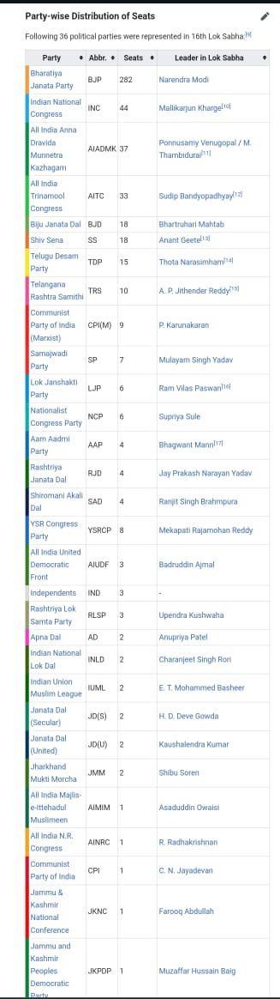

Analysis of 16Th Lok sabha
Members of the 16th Lok Sabha were elected during the 2014 Indian general election.
The elections were conducted in 9 phases from 7 April 2014 to 12 May 2014 by
the Election Commission of India. The results of the election were declared on 16 May 2014.
The Bharatiya Janata Party (of the NDA) achieved an absolute majority with 282 seats out of 543,
166 seats more than in the previous 15th Lok Sabha. Its PM candidate Narendra Modi took office on
26 May 2014 as the 14th prime minister of India. The first session was convened from 4 to 11 June 2014.
There was no leader of the opposition in the 16th Lok Sabha as the Indian Parliament rules state
that a party in the Lok Sabha must have at least 10% (55) of the total seats (545) to be considered the opposition party.
The Indian National Congress (of the UPA) could only manage 44 seats, while
the All India Anna Dravida Munnetra Kazhagam party from Tamil Nadu came a close third with 37 seats.
Mallikarjun Kharge was declared the leader of the Indian National Congress in the Lok Sabha.
Five sitting members from Rajya Sabha, the Upper House of Indian Parliament,
were elected to 16th Lok Sabha after the 2014 Indian general election.
The pro-tem Speaker Kamal Nath was administered oath on 4 June 2014 & presided over the election
of the Speaker of the Lok Sabha. Sumitra Mahajan was elected as its Speaker on 6 June 2014
and would remain in office until the day before the first sitting of the 17th Lok Sabha.
M Thambidurai was elected as Deputy Speaker on 13 August 2014.
Members
edit
Main article:
List of members of the 16th Lok Sabha
Seat distribution in the 16th Lok Sabha
Speaker: Sumitra Mahajan, BJP
Deputy Speaker: M. Thambidurai, AIADMK
Secretary-General: Snehlata Shrivastava
Leader of the House: Narendra Modi, BJP
Leader of the Opposition: Vacant, as no opposition party received more than 10% of the total seats.
